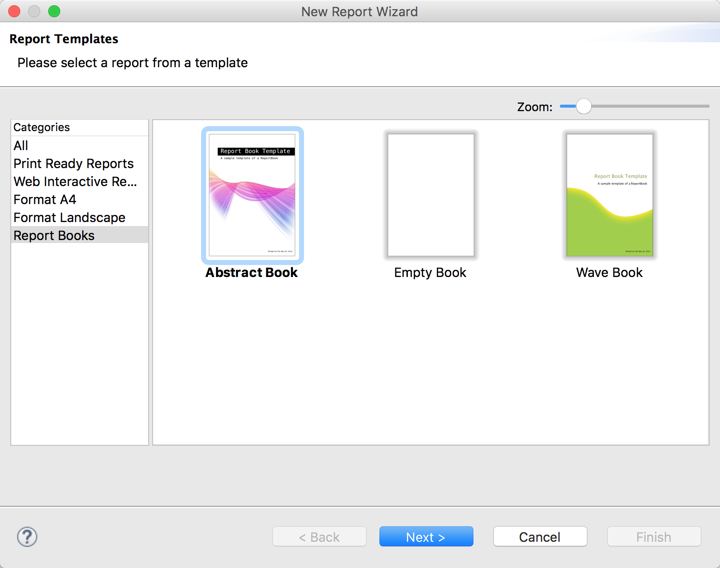
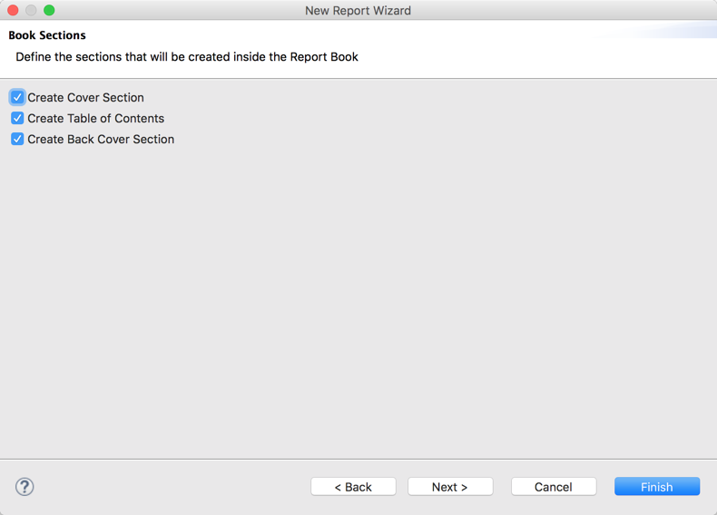
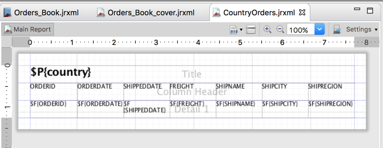
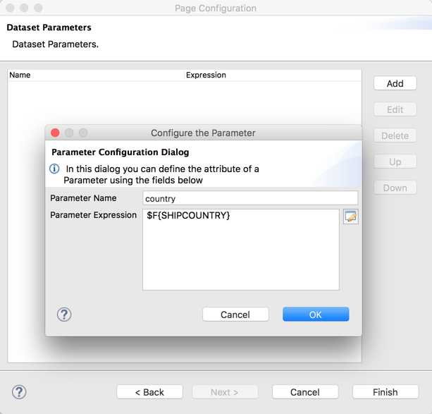

This tutorial shows how to create a simple JasperReports Book that uses the basic features in Jaspersoft Studio. The sample book contains the orders for each country as a separate report and a table of contents that shows the page number where each report part begins. You do this in three main steps:
-
Create a report book with a query that groups records by country.
-
Create a report with the information we want with a parameterized query for country.
-
Add the report to the Content (detail) section of the report book and set the parameter appropriately.
A report book is a single .jrxml that bundles multiple reports into a single object. A report book has sections, similar to bands. The possible sections are: detail, group header, and group footer sections. Like bands, you can have multiple instances of a section. Inside each section, you can have one or more reports or report books. You cannot have other element types in a report book.
The individual reports inside a report book are called "report parts". They are similar to subreports, but each report part is included as a whole report, not embedded as data. This means each report part starts on a separate page and different report parts can have different page layouts.
A report book has a dataset that determines how many times each part is instantiated. For example a part placed on the detail section is printed once for each record from the dataset. Dummy groups (that is, groups that have constant group expressions) can be used for parts that should only be included once in the generated document.
The group header or group footer section can be used to create a table of contents that lists the titles of the report parts.
As mentioned above, this example creates a report that contains the orders for each country as a separate report, along with a table of contents that shows the page number where each report part begins. The first step is to create a new report book using the New Report Wizard:
-
Right-click on a project in the project explorer and select New > Jasper Report or click on the Jaspersoft Studio toolbar.
-
In the New Report Wizard, select Report Books in the Categories pane on the left and choose one of the available templates. For this example, choose the Abstract Book template, which includes all the components for a book with a cover, table of contents, detail pages, and back cover. Then click Next.
 -
Enter a name, Orders_Book, and location for the book, then click Next.
-
Select a data adapter for the book. For this example, use the Sample DB data adapter to use the sample database shipped with Jaspersoft Studio. Then click Next.
-
Set up a query that groups orders by country. In the SQL query editor, enter the following query:
SELECT SHIPCOUNTRY FROM orders GROUP BY SHIPCOUNTRY
Then click Next.
-
Select SHIPCOUNTRY as a field, then click Next. The Book Sections window is displayed.
 -
Leave the default selection on the sections to be created. As mentioned you want a cover, table of contents, and back cover for the final book sample. Click Finish.
NOTE: In this template, the Cover and Table of Contents section is a group header section, the Content section is a detail section, and the Backcover section is a group footer section.
The report book and report parts are created and the JasperBook editor opens showing the book structure.
The template includes some preformatted report parts, which you can easily modify. To edit the book cover report part and change the title and subtitle:
-
Double-click on the "Orders_Book_cover" part to open the correct editor – in this case, the report editor showing the "Orders_Book_cover" file.

-
Edit the title and subtitle to match your report.
The table of contents part is already correct and you can use it as it is. No need to change anything.
Next, create a new report part to generate the information for each country inside the content section. To do this:
-
Create a new report using a blank template, using the Sample DB with the following query:
SELECT * FROM orders WHERE shipcountry = $P{country} ORDER BY shipcityThis extracts all details for the orders for a specific country. You will create the proper "country" parameter in this report. The next section shows how to correctly initialize this parameter in the book report.
-
Select all fields in the Outline view and drag them to the report's detail band. Then add $P{country} to the Title band. You should have something like the screenshot below: a bunch of fields with a bigger title.
 -
To connect the link in the table of contents to a meaningful bookmark for each country, set an Anchor Name Expression for the text field in the Title band.

You have only a couple of things left to do in the (main report) book.
-
Just select the part created in the previous section (for example, CountryOrders.jrxml) in the project explorer and drop it in the Content section of the report book. A dialog pops up to let you configure the connection for this part.
Since this is a simple example we can reuse the connection from the master report.

-
Click Next to set the parameter used to feed the part. Just remember the report that you previously created and the parameter that you set on it.

All is set and you can run the report preview, using the Sample DB as default data adapter, of course.
Give it a try, exploring the book and navigating through the different sections from the table of contents, which contains numbered references to the pages with details for each country.
If you want to explore a more complex example, look at the JasperReports sample project, JasperReportsSamples. You can build this in Jaspersoft Studio via File > New > Project > JasperReports Samples. The report book sample in the book subfolder showcases a more detailed table of contents along with a chart in each report part for more appealing results.